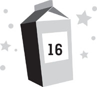

Lunar day 217
Post-traumatic experience recovery period
The helmet repair kit had survived the trip through the meteor shower. Chang, Mom, and Dr. Howard went right to work replacing their visors. Meanwhile, Dad patched my suit the best he could. The meteor shower was letting up—Kira and I were unlucky to have been outside for the worst of it—and everyone wanted to resume the search for Nina as soon as it was over.
The pod was cramped with all of us in it. It was much smaller than I’d expected, given that four people were going to be living there once construction for MBB was under way. Most of the actual work would be done by robots, but humans were still needed there. Even though the site wasn’t that far from MBA, it still took time and energy to go from one to the other—and as Kira and I had just learned firsthand, the less time you had to spend in transit on the lunar surface, the better.
Inside the pod, there were four bunks against the side wall, four workstations, some storage areas, a tiny kitchen, and a toilet that looked even more awful than the ones we had back at MBA. This was all crammed into a tubular space smaller than my bedroom back on earth. There wasn’t even a separate space for the toilet. You could draw a curtain around you, but that was it for privacy. If anyone got bad gas, they’d stink up the whole pod for days.
“This place makes Moon Base Alpha look like the Four Seasons,” I told Mom.
“If you think this is bad, imagine what it was like for the crew who built MBA.” Mom popped her old, cracked visor off her helmet and tossed it aside. “At least the people staying here will have the option of visiting MBA now and then for showers and time off. The MBA construction crew had to stay in a pod like this for an entire year.”
“Four people? In something this small for a year?” I echoed. “I’m surprised no one went nuts.”
“They might have,” Dad said. “NASA was awfully secretive about the whole project.”
My smartwatch suddenly vibrated on my wrist. Riley Bock was calling from Hawaii.
“It’s Riley,” I said. “Mind if I take it?”
“Sure,” Mom told me. “We’re not going anywhere until these helmets are fixed.”
I accepted the call. Video of Riley sprang up on the face of my watch. She was outside my old middle school, passing from one classroom to another. As usual, it was a beautiful day in Hawaii—even though it was the middle of winter in the rest of the United States. Riley was dressed in a T-shirt and shorts, and the sun was so bright, the image was almost blinding in the darkness of the pod. “Aloha, Moonie!” she said. “Is something wrong up there?”
It took me a moment to realize she was asking this jokingly. “Why?”
“ ’Cause I’ve sent you, like, thirty texts since last night and I called once and I haven’t heard boo from you today.”
“Sorry. Things have been kind of hectic.” I picked my words very carefully. NASA monitored all our calls, making sure that no one said anything bad about the moon program or leaked classified information. If I did that, they’d stop the conversation immediately—putting a fake “transmission failure” notice up to fool Riley—and I could lose my phone privileges completely. For example, even though there’d been a murder at MBA a month before, I and all the other Moonies had been barred from saying a single word about it to anyone on earth. The entire story had been buried by NASA.
Riley asked, “Did you watch that video I sent you last night yet?”
“Video? . . . No.” It occurred to me that, in all the events of the day, I hadn’t bothered reading through all the texts from Riley. “I didn’t even realize you’d sent one.”
“Well, you should watch it. . . .” The video feed suddenly began to cut out, reducing the image to jumbled pixels and garbled sounds for a few seconds. The decaying feed wasn’t really surprising, given that I was receiving it in an underground tube 250,000 miles from earth. Frankly, it was astonishing that I’d received a clear image for as long as I had.
“Hold on,” I said. “You’re breaking up.”
Riley seemed to still be talking, unaware that I couldn’t hear or see her, but it was hard to tell for sure—because I couldn’t see or hear her. And then, a single brief burst of audible speech came through: “. . . the Sjobergs . . .”
I moved toward the air lock, where I figured the reception might be slightly better. “Can you repeat that?”
Sure enough, the image cleared up a bit as I neared the air lock. For a few seconds, I could see Riley bright and clear again, as if I were right back on earth. She was standing outside the gymnasium. A lot of students had now gathered behind her, realizing she was talking to me on the moon, and were either waving hello or mugging for the camera. Riley repeated herself. “I said, I guess you’re getting along better with the Sjobergs now, huh?”
While NASA would never have let me bad-mouth the space tourists, I hadn’t ever made it a secret that we didn’t get along. “Um . . . why would you say that?”
“Watch the video! And if they ever invite you to one of their fancy homes for vacation, tell them your best friend needs to come too!”
The picture fuzzed out again before I could respond, and was then replaced by a screen saying TRANSMISSION FAILURE. I guessed this was legit and that NASA hadn’t intervened—transmitting between earth and the moon wasn’t exactly easy—but the truth was, I had no idea.
Kira pointed to a computer station crammed between two storage units near the air lock. “Think we can watch the video on that?” She wasn’t even trying to pretend she hadn’t overheard my conversation. In the cramped pod, it would have been impossible not to.
“It might be private,” Mom told her.
“I don’t mind,” I said. I didn’t want to wait to see it. On my watch, I brought up the list of texts Riley had sent, searching for the one with the video attached. I could see why Riley had called. She’d sent the video the night before, but had then fired off plenty more texts that morning. I hadn’t responded to any of them, because I’d been busy trying to not get killed by Patton Sjoberg. Or meteorites.
I located the video and transferred the file to the computer. It popped up on the screen and instantly started playing. It began with the logo of InterNetwork News, and then Katie Gallagher, one of their most famous anchors, appeared.
“This is an INN exclusive,” she announced. “If you’ve been paying any attention to Moon Base Alpha—and honestly, who hasn’t?—then you certainly know about the world’s first lunar tourist family, the Sjobergs. But while the rest of the Moonies at MBA have made video logs and blog updates, we haven’t heard anything from the Sjobergs at all—leading many people to speculate that perhaps their experience up there hasn’t been enjoyable. Well, we are about to find out the truth. The Sjobergs have finally consented to break their silence and conduct an interview with me.”
“Uh-oh,” Chang said under his breath. “When did this run?”
“Last night, I guess,” I told him. “I’ll bet Riley sent it right after it posted.”
The video shifted to a view of the Sjobergs in their room at MBA. They all sat on their InflatiCubes facing the camera, looking like a perfectly decent family for once. Lars and Sonja sat in the middle, flanked by Patton and Lily. Katie Gallagher was relegated to a tiny inset down at the bottom of the screen.
“How’d they even do this?” Kira asked. “Wouldn’t NASA have blocked them?”
“Maybe they found a way to get around the NASA censors,” Mom replied.
“Thanks for joining me,” Katie said on the video.
“Oh, it’s our pleasure,” Lars replied, flashing the first smile I’d seen from him in the past few months. “We’re very big fans of yours.”
Katie beamed. “That’s so kind of you. I hope you don’t mind, but I’d like to cut to the chase. Could you address the rumors that have been swirling about your dissatisfaction with Moon Base Alpha?”
“Certainly,” Lars answered. “I’d like to take this opportunity to declare that all those rumors are completely unfounded. We have no issues at all with Moon Base Alpha. In fact, we love it up here.”
“What?” Kira asked, stunned. All the adults looked equally shocked.
So did Katie Gallagher. She seemed caught completely off guard—and a bit annoyed as well. As if she’d been hoping for a great exposé about Moon Base Alpha and had now been denied. “I’m sorry?” she asked. “Did you just say that you love it up there?”
“Yes,” Sonja cooed. “It’s simply wonderful. This has been the best vacation we have ever had. Better than the French Riviera, or the Maldives, or Gstaad . . .”
“Or even the Bahamas,” Lily added. “And we own a whole island there!”
“It’s worth every penny we spent!” Lars proclaimed.
“Even though you spent over half a billion dollars?” Katie asked skeptically.
“Absolutely,” Lars replied. “Sure, it’s not the same as staying in a luxury resort on earth. There aren’t any servants or fancy meals or beaches to walk on. But then, you have to ask yourself, is that really what makes a vacation great? Shouldn’t it all be about the place you’re going and the experience of being there? What could possibly be a more exciting place to visit than the moon? What could be a more amazing experience than taking an actual rocket into space? What could be better than spending six months in such an incredible place with my wonderful family? I wish that everyone on earth could have one fraction of the joy that we’ve experienced up here.”
All of us looked to one another, too stunned by Lars’s performance to speak.
Because there was no other word for it. It was definitely a performance. The Lars in the interview was nothing like the Lars any of us had been with for the past few months. It wasn’t merely that he was spouting lies to Katie Gallagher, telling her the exact opposite of everything he’d been saying to us. It was that Lars himself seemed to be the exact opposite. The Lars in the video was gracious, kind, and well-spoken, while the real Lars was cruel and hot-tempered and rarely said anything that wasn’t outright nasty. I got the distinct impression that he’d written all his answers out beforehand and memorized them.
“Is that even Lars Sjoberg?” Kira asked. “Or did they replace him with a robot?”
“Er . . . what about your relations with the other lunarnauts?” Katie asked, apparently concerned that this interview wasn’t nearly as sensational as she’d hoped it was going to be. She seemed desperate to find something to provoke an angry response. “I’ve heard things haven’t been quite so pleasant there as you’re making them out to be.”
Lars broke into fake laughter, as though Katie had told him the funniest joke of all time. The rest of the Sjobergs followed his lead.
“Oh, Katie,” Lars chuckled, “please don’t be offended, but the rumors you’ve heard have no foundation in reality whatsoever. Our relationships with our fellow lunarnauts have been the best part of this vacation. We have made so many wonderful friends here, going home is going to be extremely difficult for us.”
“In fact,” Sonja added, “we intend to stay friends with everyone here once we are all back on earth. We hope they’ll come visit us at any of our vacation homes.”
This from the woman who once announced at dinner that she wished all the rest of us would drop dead from moon disease.
While the Sjobergs all looked eerily happy, Katie Gallagher did not. She was trying to keep a smile on her face, but it was becoming hard work. She shifted her attention to the kids, hoping they’d be easier to provoke. “Patton and Lily, have you found this experience equally as wonderful as your parents have?”
“Yes,” Patton said. And that was it. He wasn’t nearly as adept at lying as his parents, so it seemed to be all he could manage.
However, Lily had the gift for gab, and she deftly took over. “I think that Patton and I have probably enjoyed our time here even more than our parents. I have had so much fun with the Marquez kids and the Gibson kids and Kira Howard. They really feel like family to me.”
“Yes,” Patton said again.
Katie Gallagher looked as though she had just sat on an entire box of thumbtacks. “So then, there hasn’t been anything bad about your experience at Moon Base Alpha at all?”
“The only bad thing about this experience,” Lars replied, “is that it will have to end. Sadly, NASA tells me that it won’t be possible to extend our stay, as there are many other families who have paid for the privilege of coming here after us, but perhaps we will be able to return to the moon one day. I understand there are many companies looking to build hotels here, and I think I speak for all of us when I say that another vacation here is something we’d happily sign up for.”
“Absolutely,” Sonja agreed. “Now that we’ve been here, vacations on earth will be a bore. The moon is simply the best place we’ve ever gone. Nothing can compare.”
“Hopefully,” Lars said, “in the not-so-distant future, lunar travel will be available for everyone, not merely the richest people. Because this is an experience everyone should have. There are simply no words to describe how amazing it has been.”
“Given that,” Katie said, “I suppose it’s time to bring this interview to a close. Lars, Sonja, Patton, and Lily, thank you so much for taking the time to speak to me from all the way at Moon Base Alpha. It’s been a pleasure.”
“No,” Lars corrected, “the pleasure was all ours. Thank you, Katie.”
The video ended.
“What the heck was that?” Kira asked.
“Looks like NASA finally convinced them to make a statement supporting the moon base,” Mom replied.
“The Sjobergs never do anything unless it benefits the Sjobergs,” Chang said suspiciously. “They’re not going to do some PR campaign for NASA. They loathe NASA. They’re up to something here. I guarantee it.”
The radio crackled with a new transmission. “Hey, guys!” Daphne chirped. “We haven’t seen a meteorite strike in the past ten minutes and the satellite isn’t picking up any incoming, so it looks like it’s safe for you to come on home!”
Mom radioed back. “That’s good to hear. How’s Violet doing?”
“Great, as usual,” Daphne replied. “In fact, she’s right here and wants to say hi.”
“Hi, Mommy!” Violet called. “Can I have some space ice cream?”
“Did you eat your lunch?” Mom asked.
“Um . . . yes,” Violet said, in a way that indicated she hadn’t. She hadn’t mastered lying nearly as well as the Sjobergs had.
“We’ll talk about it when we get back,” Mom said, then signed off and turned to all of us. “My helmet’s fixed. How’s everyone else’s?”
“Good as new,” Dr. Howard said, tightening the final screw on his visor.
“Same goes for Dash’s suit,” Dad said, pointing to the patch he’d put on it. It didn’t look good as new to me, but it looked much better than it had before. “I recharged your oxygen tanks too,” Dad told me.
“All right,” Chang said. “Suit up, everyone. We’re going back out there.”
Despite Daphne’s claim that the meteorite shower was over, my heart still began racing. I stared out the window at the surface of the moon, feeling my stomach churn with anxiety.
Hopefully, for once, a trip onto the lunar surface wouldn’t be a near-death experience.